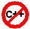

| 2. Operators | ||
|---|---|---|
 | Chapter 4. The Java Language |  |
| 2. Operators | ||
|---|---|---|
| | Chapter 4. The Java Language | |
Operators perform some function on either one or two operands.
Table 4.2. Arithmetic Operators
| Operator | Use | Description |
|---|---|---|
| + | op1 + op2 | Adds op1 and op2 |
| - | op1 - op2 | Subtracts op2 from op1 |
| * | op1 * op2 | Multiplies op1 and op2 |
| / | op1 / op2 | Divides op1 by op2 |
| % | op1 % op2 | Computes the remainder of dividing op1 by op2 |
| + | + op | Indicates a positive value |
| - | - op | Arithmetically negates op |
| ++ | op ++ | Increments op by 1; Eval before incrementing |
| ++ | ++ op | Increments op by 1; Eval after incrementing |
| -- | op -- | Decrements op by 1; Eval before decrementing |
| -- | -- op | Decrements op by 1; Eval after decrementing |
![[Caution]](images/caution.png) | Caution |
|---|---|
 The Java language extends the definition of the operator + to include string concatenation. |
You use the assignment operator, =, to assign one value to another.
| Caution |
|---|---|
The assignment operator just changes the pointer of Reference variables. |
The code:
StringBuffer car1 = new StringBuffer("Toyota");
StringBuffer car2 = new StringBuffer("Ford");Results in the following memory structures:
If the Assignment operator is used:
car2 = car1;
The car2 variable is pointed to the same object as car1 variable:
A common source of mistakes is to think that car2 holds a copy of the object in car1 and to change it not expecting this to affect the object held by car1.
Table 4.6. Short Cut for the Assignment Operator
| Operator | Use | Equivalent to |
|---|---|---|
| += | op1 += op2 | op1 = op1 + op2 |
| -= | op1 -= op2 | op1 = op1 - op2 |
| *= | op1 *= op2 | op1 = op1 * op2 |
| /= | op1 /= op2 | op1 = op1 / op2 |
| -= | op1 -= op2 | op1 = op1 - op2 |
| |= | op1 |= op2 | op1 = op1 | op2 |
| ^= | op1 ^= op2 | op1 = op1 ^ op2 |
| <<= | op1 <<= op2 | op1 = op1 << op2 |
| >>= | op1 >>= op2 | op1 = op1 >> op2 |
| >>>= | op1 >>>= op2 | op1 = op1 >>> op2 |
| |  | |
| 1. Variables and Data Types |  | 3. Expressions and Control Flow Statements |
 Audio in Portuguese
Audio in Portuguese